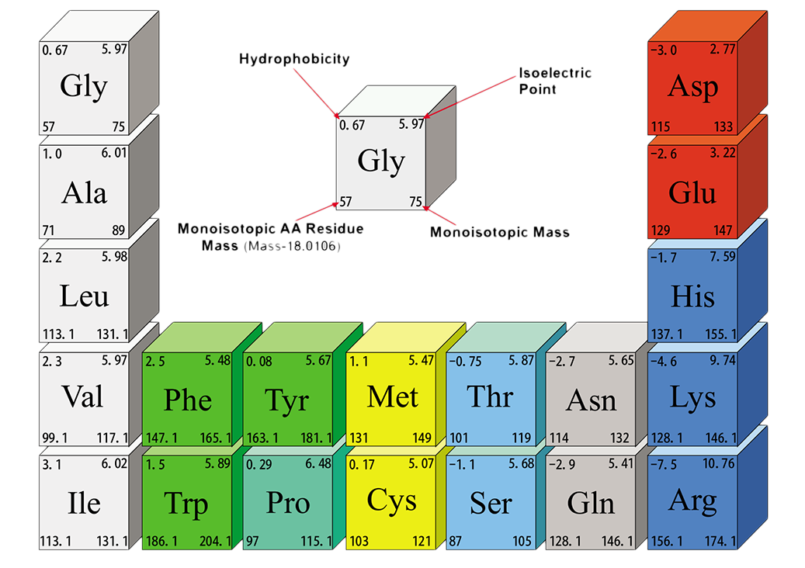
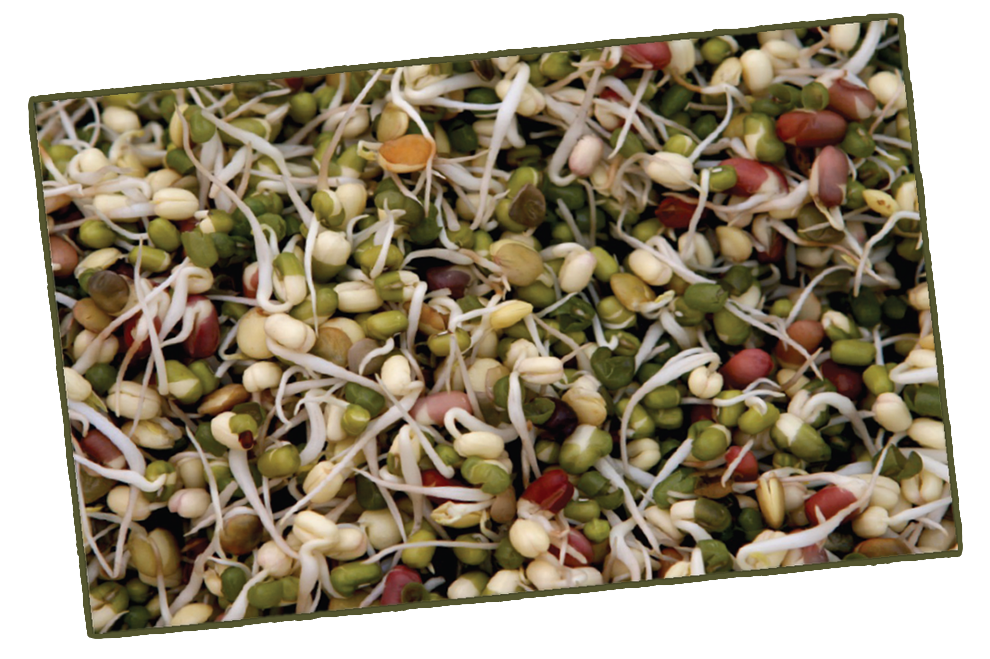

-

- During cooking or processing of food, amino acids may be lost to a greater extent or may be changed into unavailable colour, but essential amino acids are lost in the process, causing deterioration in nutritional value. Lysine is one of the most affected essential amino acids. Loss of amino acid is proportional to the severity of heat applied.
However, heating should not always be viewed in a negative sense. Destruction of trypsin inhibitor and other anti-nutritional factors and detoxification (e.g. cooking cassava in open pans) due to heat are some advantages. Heating also increases the palatability and digestibility of food.
Note:
Germination can improve the nutritional value and digestibility of pulses. During germination, the vitamins, minerals and enzymes are increased. Thus, sprouted beans are nutritionally better than raw beans.

